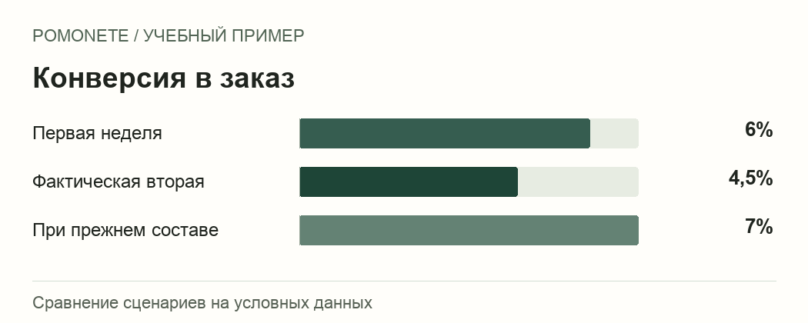

Почему общая конверсия Яндекс Маркета упала при росте внутри категорий
Как селлеру разложить конверсию по категориям и пересчитать её с фиксированным составом трафика.
Селлеры Яндекс Маркета часто начинают понедельник со сводной конверсии. В магазине органайзеров и настенных креплений она снижается, хотя обе команды показывают улучшение. Причина может быть в распределении показов между группами. Проверим, сколько изменилось внутри каждой категории и что добавила смена веса.
Какие строки соединить
Соберите пару «показы и заказы» по каждой группе товаров и неделе. Для простого примера проценты округлены до целого. В собственной выгрузке можно считать из чисел заказов, чтобы округление каждой категории не повлияло на общий итог. Заказы и показы должны относиться к тому же набору предложений и одинаковому определению события.
Чтобы пересобрать расчёт «Конверсия в заказ» для своего магазина, перенесите в него исходные числа. В формуле A обозначает «конверсия органайзеров, %», B обозначает «показы органайзеров», C обозначает «конверсия креплений, %», D обозначает «показы креплений». Обе ставки взвешивают по их собственным объёмам. Среднее из двух ставок годится только при равных весах. Запишите рядом период и охват каждого среза. Для оценочных строк оставьте пояснения рядом с исходными значениями. При чтении сводки будет видно, какие из них пока подтверждены.
Конверсия в заказ = (A × B + C × D) ÷ (B + D)
| Условие | Конверсия органайзеров, % | Показы органайзеров | Конверсия креплений, % | Показы креплений | Конверсия в заказ |
|---|---|---|---|---|---|
| Первая неделя | 8 | 2 000 | 2 | 1 000 | 6% |
| Фактическая вторая | 9 | 1 000 | 3 | 3 000 | 4,5% |
| При прежнем составе | 9 | 2 000 | 3 | 1 000 | 7% |

В сценарии «Первая неделя» в формулу подставляем конверсия органайзеров, % = 8, показы органайзеров = 2 000, конверсия креплений, % = 2, показы креплений = 1 000. Получается 6%. Органайзеры дают две трети показов. Крепления продаются реже, хотя их карточки тоже доступны всю неделю.
В сценарии «Фактическая вторая» в формулу подставляем конверсия органайзеров, % = 9, показы органайзеров = 1 000, конверсия креплений, % = 3, показы креплений = 3 000. Получается 4,5%. В обеих категориях конверсия выросла на один пункт, но показов креплений стало в три раза больше.
В сценарии «При прежнем составе» в формулу подставляем конверсия органайзеров, % = 9, показы органайзеров = 2 000, конверсия креплений, % = 3, показы креплений = 1 000. Получается 7%. Частоты берём из второй недели и применяем к прежнему распределению показов.
Если «Первая неделя» взять за исходную точку, «Фактическая вторая» меняет показатель «конверсия в заказ» на -1,5 п. п., а «При прежнем составе» на 1 п. п.. Между двумя последними строками разница составляет 2,5 п. п. при вычитании второй из третьей. Смотрите, какой именно вход изменился между строками. Если менялись объём и условия одновременно, итог сравнения относится ко всему сочетанию.
В пересчёте на исходное значение разница второй строки составляет -25%. Здесь в знаменателе модуль первого результата, 6%. Для показателя в процентах рядом сохраните и абсолютную разницу в процентных пунктах. Для малого исходного значения процентный скачок может оказаться крупным даже при скромном практическом эффекте. В рабочем отчёте оставьте оба исходных значения, чтобы при расширении выборки можно было пересчитать изменение.
Почему нельзя усреднять проценты
Среднее между 9% и 3% равно 6%, но это подразумевает, что обе группы получили поровну показов. Во второй неделе такого распределения не было. Иногда смена состава объясняется одной партией со скидкой. Эту партию удобнее вынести в отдельную группу перед анализом работы остального каталога.
Для исходной выборки пригодятся отчёт аналитики и история доступности предложения. Зафиксируйте строки и границы периода, по которым собирался показатель «конверсия в заказ». Копию выгрузки держите рядом с рабочим расчётом. По ней коллега сможет проверить, что строку отнесли к нужному сценарию, а единица измерения сохранилась при переносе.
Рядом с таблицей показов положите календарь доступности, позиций и цен. Выгрузка агрегатов удобна для первого сигнала, но день с выключенным предложением ломает сравнение. Для каждой крупной группы полезно иметь отдельные суммы числителя и знаменателя. Если у дорогой категории мало показов, сводная конверсия почти полностью повторит поведение ходовых позиций. Для разбора причины начните именно с групп, у которых заметно изменился вклад в суммарную аудиторию.
Что сильнее всего меняет результат
Возьмём сценарий «Фактическая вторая» с результатом 4,5%. В нём последовательно изменим «конверсия органайзеров, %», «показы органайзеров», «конверсия креплений, %», «показы креплений». Для каждого входа шаг близок к 10% его исходной величины, целые значения округлены. После каждого опыта возвращаем остальные числа к исходным. Так можно выяснить, какой вход уточнять первым, если перед решением мало времени.
- «Конверсия органайзеров, %» меняется с 9 на 10. При прежних остальных входах получается 4,75%, сдвиг составляет 0,25 п. п..
- «Показы органайзеров» меняется с 1 000 на 1 100. При прежних остальных входах получается 4,61%, сдвиг составляет 0,11 п. п..
- «Конверсия креплений, %» меняется с 3 на 4. При прежних остальных входах получается 5,25%, сдвиг составляет 0,75 п. п..
- «Показы креплений» меняется с 3 000 на 3 300. При прежних остальных входах получается 4,4%, сдвиг составляет -0,1 п. п..
При выбранных шагах параметр «конверсия креплений, %» дал самый крупный сдвиг величиной 0,75 п. п.. Если в магазине эта величина меняется в узком диапазоне, подставьте обе его границы. Для связанных условий добавьте отдельную строку с одновременным изменением входов и поясните их связь в примечании.
Дополнительный тест подходит для регионов. Удержите распределение по регионам первой недели и повторите расчёт отдельно для двух категорий. Если итог меняется даже после такой поправки, проверьте внутри региона наличие, сроки получения, цену и состав покупателей.
Что обсуждать с владельцем категории
Начните с причины дополнительных показов креплений. Если этот трафик принёс положительный вклад, падение общей конверсии может быть нормальным эффектом роста. Введите рядом деньги на тысячу показов и сравните вклад каждой группы с затратами на привлечение. Затем решите, где расширение имеет смысл.
Снимайте второй срез на тех же условиях. Если изменились источники или доли предложений, добавьте таблицу с фиксированным составом товаров и отметьте, какую долю исходной выборки она охватывает. Один расчёт покажет, что произошло у магазина в целом. Расчёт с фиксированным составом покажет изменение у сравнимых позиций. Заказы закрываются со временем, поэтому суммы по завершённым продажам дополните датой проверки.
Оставьте в рабочей таблице причину выбора. Когда селлеры Яндекс Маркета возвращаются к расчёту «конверсия в заказ», им пригодятся полученное значение, ответственный и дата пересмотра. Если в решении использовался сценарий «Фактическая вторая», перенесите вместе с ним допущения. При обновлении источников сначала проверьте одну исходную строку и только потом пересчитывайте сводку.